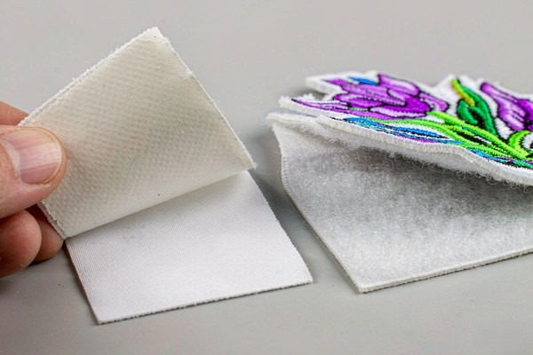

Patch Backing Types: Complete Selection Guide
The front of a patch gets all the attention, but the backing decides whether it stays put for a season or for a decade. This guide walks through every common patch backing type — how each one attaches, where it shines, and where it falls short — so you can pick the right one the first time.

People agonize over thread colors and border styles, then treat the backing as an afterthought. That's backwards. The patch backing types you choose determine how long the patch survives, whether it damages the garment, and whether the wearer can move it to another jacket next season. Get the front right and the backing wrong, and you've built a beautiful patch that falls off in a month.
Here's the plain-language tour of every backing worth knowing — what it feels like, when to pick it, and when to walk away.
1. Why the Backing Is Half the Decision
A patch is a promise pinned to fabric, and the backing is what keeps that promise. Three questions decide everything:
- How permanent does it need to be? A uniform patch should outlast the shirt. A morale patch is meant to be swapped out monthly.
- What fabric is it going on? Delicate knits, thick denim, slick nylon, and curved caps each reject certain backings.
- Will it be washed and worn hard? The more abuse, the more the attachment method matters.
Answer those three and the right choice usually surfaces on its own. The sections below give you the full menu.
2. The Main Patch Backing Types
These five cover roughly 95% of custom patch orders. Each one is a different trade-off between permanence, convenience, and garment-friendliness.
Sew-on backing
The classic: a clean twill back with no adhesive, attached with needle and thread. Most factories ship embroidered, woven, and chenille patches plain by default — meaning sew-on is effectively the zero-upcharge baseline every other backing is compared against. Attached properly with a sewing needle or a machine, it's the strongest, most permanent option and works on nearly any fabric a needle can pass through — denim, canvas, leather, uniforms, caps. It also ages beautifully: the stitching becomes part of the garment's story, and a pulled thread is fixable in minutes rather than a lost cause.
The honest cost is labor. A hand-sewn patch takes ten to twenty minutes with a whip stitch around the merrowed border; a machine does the same job in seconds with a zigzag or straight stitch close to the edge. Either way, anchor the corners first so the patch can't drift while you work around the shape. And because there's no glue, a sew-on patch stays re-usable — you can always convert it later by adding iron-on film or a hook-and-loop layer. For the full how-to, our sew-on patches guide walks through it step by step.
Iron-on (heat-seal) backing
A layer of heat-activated glue — in production terms, a thermoplastic adhesive film — is bonded to the back of the patch at the factory. You press it with a household iron or a heat press, the adhesive melts and flows into the weave of the fabric, and the patch fuses on. It's the go-to for caps, kids' clothes, and quick DIY projects because it needs no sewing skills and no extra parts.
Two honest warnings first: iron-on doesn't survive heavy washing quite as well as sewing — edges can lift after dozens of hot cycles — and it's effectively permanent, because removing it cleanly later is hard. It also belongs only on fabrics that tolerate heat. Thin or synthetic fabrics can scorch or melt, and water-repellent coatings can stop the adhesive from bonding at all, so test on a hidden spot first.
When you do apply it, heat and pressure matter more than time: roughly 300–330°F (150–165°C) for 10–15 seconds with firm, even pressure — follow the sheet your supplier sends, since adhesive films differ. Pre-warm the fabric, press, then flip the garment and press from the inside so the glue fully wets the threads. Let it cool completely before moving anything.
Peel-and-stick adhesive backing
A pressure-sensitive adhesive (PSA) covered by a release liner. Peel the liner, press the patch on, and it holds instantly — no heat, no needle. In the trade, PSA comes in two broad grades, and it's worth knowing which one you're quoting: a removable-grade PSA that lifts off cleanly for days or weeks of use, and a permanent-grade PSA that grips harder and is meant for long-term stick-on applications.
This is the temporary layer of the patch world: perfect for promotional giveaways, event lanyards, retail tags, and product packaging, and it can often be repositioned if you're careful. It trades durability for convenience, so it's not the pick for a jacket that gets washed weekly. Apply it to a clean surface — a wipe with rubbing alcohol before pressing helps the bond a lot — press from the center outward to push out air, and give the adhesive a day to cure before heavy handling. Our adhesive patches guide digs into where peel-and-stick genuinely shines.

Velcro (hook-and-loop) backing
Strictly speaking, the generic name is hook-and-loop fastener — Velcro is the best-known brand — and it always comes as two mating halves. The hook side is sewn or heat-bonded to the back of the patch; the loop side is attached to the garment or gear, either as a sewn panel or a peel-and-stick loop field. The result is instant attachment and instant removal, which is why Velcro dominates tactical gear, uniforms, and the morale-patch world.
A few things buyers learn the hard way. First, the hook side should be sewn onto the patch with an edge stitch, not just glued, or it lifts after a season of wear. Second, you cannot press a Velcro patch onto plain fabric — it needs the mating loop surface, so budget for the loop panels too. Third, keep the loop field free of lint and dog hair; a clogged loop field stops gripping and no amount of patch-side hook will fix it. Done right, hook-and-loop survives thousands of attach-release cycles, which is why Velcro patches are standard on tactical kit.
Magnetic backing
A thin magnet is embedded inside the patch, and a matching counter-magnet sits on the inside of the garment, holding the patch in place through the fabric with no adhesive or stitching touching the surface. It's the favorite for retail displays, office lanyards, and anyone who wants to swap patches without leaving marks on a nice jacket or on delicate fabrics like silk and fine wool.
Technical reality check: most patch magnets are thin ferrite or neodymium discs, and holding strength drops fast as fabric layers stack up. One layer of light cotton is fine; two layers of denim or a lined jacket is asking a lot. The magnets are also the most expensive backing on this list because the counter-magnet adds a second component and the embedded magnet needs a manufacturing step of its own. And because they're strong rare-earth magnets, keep them away from pacemakers, credit cards, and anything magnetic-sensitive — worth a line in your product warnings if you sell retail.
Which one is most common overall? Sew-on for anything meant to last, iron-on for the casual majority, Velcro for tactical and swappable gear, peel-and-stick for temporary use, and magnetic for surface-friendly display.
3. Backing Types at a Glance
If you're comparing options side by side, this table is the shortcut.
| Backing | Permanence | Wash durability | Removal | Best for |
|---|---|---|---|---|
| Sew-on | Permanent | Excellent | Seam ripper, no residue | Vests, denim, uniforms, heirloom pieces |
| Iron-on | Permanent | Good | Heat & peel while warm; glue residue | Caps, kids' clothes, quick DIY |
| Peel-and-stick | Temporary | Low | Peel off cleanly | Giveaways, events, retail tags |
| Velcro | Removable | Very good | Detach instantly; loop panel stays | Tactical gear, morale patches, uniforms |
| Magnetic | Removable | N/A (not worn-washed) | Detach instantly, no marks | Display, lanyards, delicate fabrics |
| Plain / none | — | — | Convertible later | Order this when you'll add your own backing |
4. Choosing by Fabric and Use
The fabric the patch lands on narrows the field faster than any preference list. A quick match-up:
- Denim, canvas, leather, twill: Sew-on is the natural fit. These fabrics are tough enough to stitch into and the result lasts for years.
- Cotton caps and hats: Iron-on is the default — it follows the curve of the cap and needs no sewing. Press slowly around the crown for full contact.
- Performance nylon and technical shells: Heat can melt the fabric, and needles leave permanent holes. Peel-and-stick or magnetic keeps these safe.
- Uniforms and tactical gear: Velcro, almost always. It allows fast swaps between duty and dress configurations.
- Delicate knits and fine wool: Sew lightly or use magnetic — adhesives can gum the weave and heat can crush the fiber.
Still torn between sew-on and iron-on for a general garment? Many people solve it by ordering the patch plain and adding their own iron-on film later, keeping the option to sew if the glue ever fails. That flexibility is worth knowing about.
And if the item will carry multiple patches — a jacket, a vest, a tote — keep the backing consistent across the set. Mixing one permanent patch with a row of peel-and-stick ones on the same garment usually ends with the temporary ones looking tired while the sewn ones hold. Uniformity in backing keeps the whole arrangement aging at the same pace.
5. Match the Backing to the Patch Type
The backing conversation doesn't happen in a vacuum — the patch material itself decides what can be attached at all. This is where a factory's experience saves buyers real money, because a few combinations simply don't work:
- Embroidered patches and woven patches: The most forgiving. Their textile backing takes any attachment — sew-on, iron-on, PSA, or a sewn hook side for Velcro — so your choice is driven entirely by the garment and the use case.
- Chenille and leather patches: Best sewn. Chenille's plush pile makes adhesive contact weak, and iron-on heat can crush or damage both chenille yarn and leather. A needle holds them best.
- Smooth plastic PVC patches (and glow-in-dark PVC): No textile structure means thread can't anchor — stitching would tear right through. These need adhesive or a hook side applied at the factory, typically heat-bonded during production.
- Metal patches: Solid metal can't be sewn through. If the design has no pre-drilled holes, plan on magnetic backing or a factory-applied adhesive layer.
Whenever the backing has to be factory-applied to a non-textile patch, it's decided during manufacturing — you can't add it later at home the way you can iron film onto an embroidered patch. Flag the patch material when you request a quote and the factory will steer you to the combination that actually holds.
6. Cost, MOQ and Lead Time: What a Backing Adds
For B2B buyers, the backing choice lands on three commercial questions: what it costs per piece, whether it raises the minimum order, and whether it slows production.
- Plain (sew-on) is the baseline. No extra material, no extra step — it's the reference price every quote starts from, and it carries the lowest MOQ.
- Iron-on film and peel-and-stick PSA add a small per-piece upcharge — a sheet of adhesive laminated onto the back during finishing. Neither meaningfully changes MOQ or lead time.
- Velcro costs more because it's two components: the hook side attached to the patch and the loop panels your customer must also buy or sew in. Plan the loop side into the budget from day one.
- Magnetic is the premium tier. It needs an embedded magnet plus a counter-magnet, an extra assembly step, and usually a higher MOQ and a longer lead time for the magnets themselves. It's rarely the default for large uniform programs — it earns its place on display products and delicate garments.
One practical habit from our production floor: if a reorder is likely, lock the backing at the sampling stage and write it on the artwork spec. Re-backing a design between runs adds setup time and opens the door to inconsistency across batches.
7. Permanent or Removable: Know Before You Order
The single most common mistake we see is picking a permanent backing for a patch the customer secretly wants to move later. Before you order, decide which camp you're in:
- Permanent (sew-on, iron-on): Great for club colors, team uniforms, brand jackets, and anything that should stay where it's placed. Removing these later risks fabric damage.
- Removable (Velcro, magnetic, peel-and-stick): Right for morale patches, seasonal branding, rental uniforms, and retail products where the wearer decides placement.
A useful middle path: request Velcro even on patches meant to stay, because the loop panel keeps the garment clean and lets the patch be retired without damage.
8. Quick Attachment and Removal Tips
Whichever backing you pick, these habits keep the patch looking sharp.
- For iron-on: Pre-warm the fabric, press with firm even pressure for the full recommended time, then flip and press the inside too. Let it cool completely before moving the garment.
- For sew-on: Use a thread color close to the patch border or the fabric, and anchor the corners first so the patch doesn't shift.
- For peel-and-stick: Clean the surface with a little alcohol, press from the center outward, and wait a day before heavy handling.
- For Velcro: Sew the hook side with an edge stitch so it never lifts, and keep lint off the loop field or it stops gripping.
- Removing a patch: Peel-and-stick and Velcro come off cleanly. For iron-on, heat with an iron and peel while warm, then remove glue residue with a solvent tested on a hidden area.
Frequently Asked Questions (FAQ)
Q1: Which patch backing is the most durable?
Sew-on. Stitching holds through years of washing, flexing, and wear, and it's the easiest to repair if a thread ever pulls. Iron-on is a close second for light use, but sewing remains the strongest attachment.
Q2: Can I change a patch's backing after I receive it?
Usually yes. Plain sew-on patches can have iron-on film or Velcro added later, and most factories can convert backings before shipping. It's cheaper and cleaner to decide before production, though.
Q3: What's the difference between iron-on and peel-and-stick?
Iron-on uses heat-activated glue that fuses permanently into the fabric and survives washing well. Peel-and-stick uses pressure-sensitive adhesive with a release liner — instant and removable, but much lower wash durability.
Q4: Will iron-on patches damage my clothes?
On natural, sturdy fabrics like cotton and denim, no. On thin or synthetic fabrics, heat can scorch or melt the material. Always test on a hidden area first and follow the pressing instructions.
Q5: Which backing should I choose for patches I'll swap between jackets?
Velcro or magnetic. Velcro is the standard for tactical and morale patches, while magnetic keeps delicate fabrics mark-free. Both let you move the patch without damage or sewing.
Not Sure Which Backing You Need?
Tell us the garment, the fabric, and how permanent it should be — we'll recommend the right backing and send a free digital proof in 12 hours.
Get Free Quote